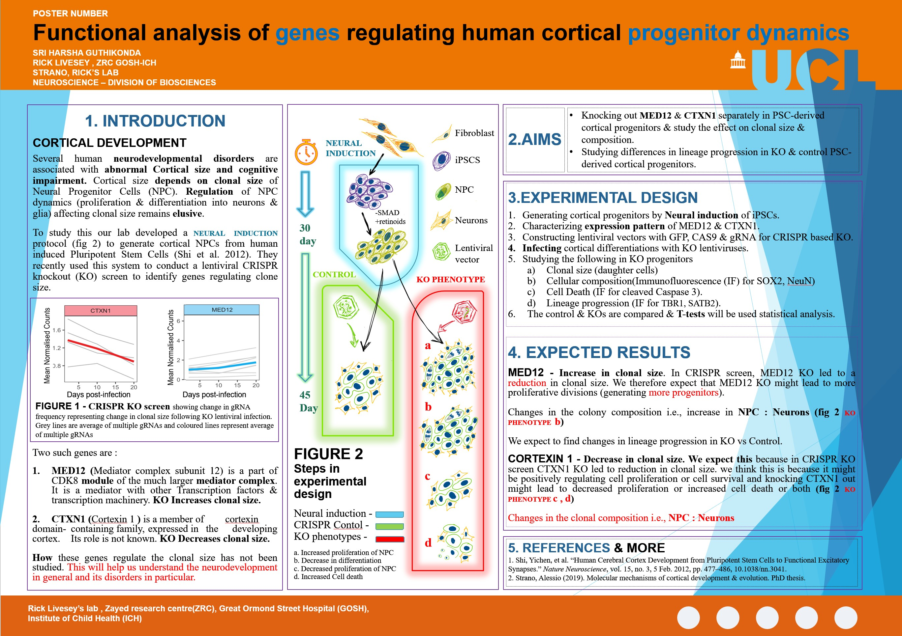

Understanding, preventing and treating neurodegeneration
has been the central goal guiding my work from the outset.
My pursuits in clinical medicine, neuroscience, functional genomics,
AI and engineering are interconnected parts of this long-term mission,
rather than separate interests or a change in direction.
I see neurodevelopment as fundamental to understanding
neurodegeneration. Studying how neural cells develop, acquire
identity and maintain their function can help reveal why
they become vulnerable and fail in disease.
Experimental neuroscience:
Research experience in human cortical progenitor biology,
neurodevelopment and CRISPR perturbation, providing a
foundation for investigating neuronal identity, cellular
vulnerability and neurodegenerative mechanisms.
Clinical medicine:
Experience in patient assessment, escalation, communication
and safe prescribing, grounding my research ambitions in
clinical needs and patient outcomes.
Genomics and computational biology:
CRISPR-screen analysis, RNA sequencing, single-cell
transcriptomics and computational approaches to investigate
cellular pathways and potential therapeutic targets.
AI and engineering:
Developing software, AI systems, research tools and
hardware solutions to support scientific investigation,
analysis and experimentation.
My aim remains to bring these fields together
to tackle two fundamental challenges:
Understand why neurons degenerate:
Investigate selective neuronal vulnerability, disease
mechanisms and molecular pathways using human cellular
models, genetics, CRISPR and computational approaches.
Prevent or slow neurodegeneration:
Identify and assess therapeutic targets, improve disease
models and contribute to the development of
disease-modifying treatments, including cell- and
gene-based approaches.
Key Skills
Clinical care: assessment and ongoing
management of post-operative and acutely unwell patients;
monitoring and escalation; safe prescribing and documentation;
patient and family communication.
Clinical assessment framework design:
Independently developed a symptom-led, cross-specialty
approach to history, examination, diagnostic reasoning,
clinical risk, communication and care planning
(see Independent Projects).
Procedures / sampling: wound care and
suturing; specimen collection and handling (blood, CSF, bone
marrow, tissue) with attention to infection control and sample
integrity.
Bioinformatics & data analysis:
whole-genome CRISPR knockout screen analysis; differential
analysis and hit calling; RNA sequencing and single-cell RNA
sequencing workflows; R-based data wrangling and
visualisation; Linux command-line work.
Scientific evidence management:
Structured literature search and appraisal, researcher
profiling, citation and provenance checks, and research-gap
analysis.
Research delivery: experimental design and
troubleshooting; standard operating procedures drafting;
quality control of equipment/processes; procurement and lab
operations; mentoring and supervision of trainees/students.
Communication & leadership: led journal
club discussions, organised workshops/meetings; cross-team
coordination; clear scientific writing and presentation.
Languages
English, Hindi, Telugu, Urdu, Sanskrit and French.
Telugu: Native (10 years of school study;
first language; 79% in SSC First Language Telugu, 2007).
Hindi: Fluent (10 years of school study;
75% in SSC Second Language Hindi, 2007).
Urdu: Strong listening comprehension,
including conversational and idiomatic Urdu. Limited
Urdu-script literacy.
Sanskrit: Academically studied
(Intermediate: 97/100 in Year 1, 94/100 in Year 2, 2009).
French: Beginner; currently learning.

Click
to open in full size
Employment and Academics
2019 – 2021 — Masters in Neuroscience
University College London, UK — Prof. Rick
Livesey, Great Ormond Street Hospital (GOSH), Institute of Child
Health (ICH), Zayed Centre for Research into Rare Disease in
Children.
Investigated genes involved in neuronal progenitor expansion
(MED12, CTXN1) in iPSC-derived human cortical progenitors.
Analyzed whole-genome CRISPR KO screens to identify genes in
human neurodevelopment.
Coursework: Receptors and Synaptic Signalling; Developmental
Neuroscience; Systems and Circuits Neuroscience; Neurobiology
of Degeneration and Repair.
2020 Jun – Dec — Duty Doctor
Aditya Hospitals, Hanamkonda, Warangal.
Interrupted my Masters to support the COVID-19 response.
Prof. G. Madhava Reddy Research Foundation (GMRRF),
Uppal, Hyderabad.
Recruited, oriented, and trained staff.
Prepared publication on PIH genetics (ACE1 I/D polymorphism)
with State hospital collaboration; developed VEGF polymorphism
project and pilot on seasonal PIH prevalence.
Mentored seven undergraduate/graduate students; organized
workshops; reviewed applications and conducted interviews for
student recruitment.
Maintained lab, QC of equipment; fabricated a 128-lane
electrophoresis rig; repaired an ultra-centrifuge certified
“dead”; ensured quality, safety and security compliance.
Laser-cut acrylic comb teeth — a fabrication
demo. Open on
YouTube
Drafted SOPs; implemented new methods, instrumentation, and
procedures; procured and negotiated ordering of
consumables/equipment/services.
Led project development, experiment execution, data
analysis, and coordinated staff/admin; mentored students in
research projects and report writing.
2018 Sep — Training
Cell biology and cell culture techniques, Centre for Cellular
& Molecular Biology (CCMB), Hyderabad.
2017 Jul – Nov — Training
Biotechnology, Prof. G.M. Reddy Research Foundation (GMRRF),
Uppal, Hyderabad.
Managed post-operative and critically ill patients.
Assisted minor clinical procedures.
2014 – 2015 — Internship (50–80 hrs/week)
Kakatiya Medical College affiliated hospitals,
Warangal.
Performed several minor and assisted major surgical/medical
procedures, including labour conduction.
Data collection/analysis for thesis “Surgical Wound Gaping”.
Assisted theses on Diabetic Ulcer scale and Pancreatic
Necrosis.
Rotations: ChandaKanthiah Memorial Hospital (Maternity),
Mahatma Gandhi Memorial Hospital Blood Bank, Community Health
Centre (Wardhannapet), Urban Health Centre (Ursu), Warangal.
2009 – 2014 — MBBS
Kakatiya Medical College, Warangal (Dr.
NTRUHS).
Distinctions in Pharmacology, Gynaecology & Obstetrics.
Extensive coursework in Anatomy (cadaver dissections,
histology), Neuroanatomy, Genetics, Biochemistry (clinical
biomolecule quantification), Molecular Biology, Physiology
(including Haematology), Microbiology (pathogen identification
and microscopy), Parasitology, Pathology (gross/histological),
General and Clinical Pharmacology (identification of
pharmacological compounds), Immunology, Toxicology,
SPM/community medicine with fieldwork and outreach.
Learning patient care and treatment modalities; clinical
exposure across Ophthalmology, ENT, General Medicine, General
Surgery (performed minor surgeries; assisted major
procedures), Orthopaedics, Paediatrics, Obstetrics &
Gynaecology (labour conduction; assisted C-sections),
Psychiatry, Dermatology, Radiology; led group discussions and
mentored juniors on clinical skills, procedures, and
differential diagnosis.
Graduated with 67.4%; among top of 2009 cohort.
2007 – 2009 — Intermediate Education
Nava Vignana Bharathi Junior College, Warangal.
Majors: Physics, Chemistry, Botany, Zoology; Sanskrit as second
language. Best outgoing; 97.8% in majors, 94.5% overall.
Up to 2007 — Primary & Secondary
Learners’ Land High School, Warangal. Best
outgoing student; 86.0%.
Independent Projects & Professional Development (c. 2011–Present)
Independent clinical framework work began during medical school
around 2011, followed by home and workspace design from 2022,
software, applied AI and professional development. These are
independent activities, not formal salaried employment.
Universal Patient
Assessment & Clinical Reasoning Framework
(c. 2011–Present): A reusable, symptom-led,
cross-specialty approach to history, examination, differential
diagnosis, investigations, red flags, urgency, consent,
counselling, treatment, referral and follow-up. Evolved from
personal medical-school notes through Word to modular HTML/CSS.
An educational framework, not a clinically validated record
or diagnostic system.
Medical education AI: Developed and iterated
PLAB/OSCE conversational role-play and case-generation
workflows, plus OET Medicine GPTs
and a published guide hub; incorporated clinical-feedback
structure and voice-transcription error tolerance.
Retrieval and voice applications: Built
practical RAG, embedding-search and speech-to-text integrations,
including easy-local-rag and whisper-keyboard.
Technical systems: Continued work on
programmable keyboards, desktop automation, browser-to-LLM
workflows and AI-assisted agent infrastructure; selected skills
are detailed below.
Home and workspace systems integration
(2022–Present): Planned the home layout and interiors,
designed a curved desk and multi-screen setup, and integrated
computers, local networking and software. Managed sourcing,
testing and iterative upgrades.
See the real workstation.
Clinical development: OET and PLAB
preparation and examinations, continuing professional learning
and related educational projects.
Targeted marketing: Audience segmentation,
campaign planning and data-led outreach for independent tools.
A workspace I designed and built
Starting in 2022, I planned the home layout and interiors,
then designed and built a curved desk and multi-screen
workspace. I selected and set up hardware, local networking
and software, tested the parts together and refined them over
time. It now supports neuroscience, medical study, software
and local AI work, including a high-memory AMD laptop added
in 2026.
Completed 19 OmniCuris courses (December 2025–October 2026).
Certificates for the 18 courses completed in 2025 document
100.5 hours of course duration; the October 2026 course
duration remains unverified. Course hours are not automatically
council-accredited CPD credits.
Keeping up to date with current practice
Alzheimer’s and Related Dementias: From Burden to Bedside
Sexual Health
Deep Brain Stimulation
Practical Approach in the Management of MI: A Step Up
Introduction to Echocardiography
Cognizance of GERD & Infections
Acute Coronary Syndrome (ACS)
ECG – Heart’s Electrical Activity
Dermatology Masterclass for GPs
Emergency Medicine & Critical Care
Thyroid Management
Addressing Micronutrient Hidden Hunger in Children
Digital Workshop on Diabetes and Technology
A–Z Symposium on Osteoporosis
Clinical Nutrition
Neuro e Zone
A Holistic Approach to COVID-19: An Update
Primary Care Allergology: All You Need to Know About
Allergic Rhinitis
What's New in Surgery?
GMC Welcome to UK Practice: attended the online
professional-development workshop (1 October 2026).
Course completion does not itself establish
GMC-accredited CME credit.
Technical Skills
Lentiviral CRISPR; iPSC-derived human neuronal progenitors;
primary culture (basics); MTT, invasion, FACS, angiogenesis,
migration, efflux, and cell counts.
CRISPR KO screen analysis: MAGeCK, edgeR, BAGEL2, CB2; guide
efficiency prediction; differential gene expression; large
dataset handling (whole-genome screens).
Windows automation: AutoHotkey,
keyboard/input workflows, hotstrings, audio controls and
iterative hardware/software fault isolation.
Windows systems engineering: Designed and
checked hardware-aware PowerShell flows for system profiles,
services/drivers and SSD migration safeguards, with startup
checks and regression tests.
Distributed local computing: Designed and
tested wake-on-demand Linux compute services, with power/lease
management and experimental local Ollama routing; wider
production deployment is not verified.
Search engineering & reliability:
Directed integration of typo-tolerant, zero-result search using
SymSpell, safe fallbacks, tests and installer/CI workflows in an
EverythingToolbar fork.
Development workflow: Practical Git/GitHub
branching and merges, build configuration, reproducible
debugging, testing and dependency troubleshooting.
RStudio interface customisation: theme
development for higher productivity (RStudio
theme video). This is a demo of an adapted existing theme,
Cobalt2.
RStudio interface demo with an adapted Cobalt2
theme. Open on YouTube
Smart-home & voice-assistant exploration:
Home Assistant integrations and community involvement.
Experience with BLE/HID internals, advanced
CI/CD, React/TypeScript, Android, Zephyr drivers and other forked
or heavily AI-assisted codebases is not presented here as
independently demonstrated expert-level programming.
AI Engineering & Applied Medical AI
Retrieval-augmented generation: Semantic
chunking, embeddings, ChromaDB/Milvus vector stores, retrieval
pipelines and local Ollama or Groq-backed generation (easy-local-rag).
Speech interfaces and transcription:
Whisper/Faster-Whisper transcription, live microphone handling,
streaming audio, wake-word interfaces and resilient device
reconnection (whisper-keyboard).
Speech-model training & evaluation:
Synthetic audio datasets, Whisper fine-tuning (LoRA/DoRA)
and WER/CER testing.
Prepared speech datasets with corrected transcripts,
speaker filtering and chunking; generated noise, voice-mix,
reverb and tempo variants using repeatable pipelines.
Evaluated checkpoints and investigated training instability.
Clinical conversational AI: Structured
system/prompt instructions for PLAB/OSCE history-taking,
examination, counselling and procedure role-play, with
transcript error tolerance, feedback criteria and
clinical-guideline checking (PLAB_2_GPT and Aspire_case_maker).
Browser/LLM integration: Browser
selection-to-LLM workflows and browser text-to-speech
integrations (Copilot-tts).
Multi-harness AI orchestration: Designed, supervised
and tested planner–worker systems using Claude Code, Codex CLI,
Z Code/GLM and OpenCode, with local-model delegation, review
and acceptance checks.
Agent memory and context engineering:
Model Context Protocol (MCP) tool integration, persistent
memory, cross-harness hooks, human review, session handoffs,
context retrieval and Git-based tests.
Ornith local-first AI infrastructure:
Configured a high-memory HP ZBook Ultra G1a
(AMD Ryzen AI Max+ PRO 395) for on-device inference, with
Ornith-1.5 (35B-A3B), local model serving, agent delegation,
memory and MCP tools. Built to keep selected private data
under local control; isolation and long-run reliability
remain under evaluation.
Local LLM inference and benchmarking:
Integrated Ollama, LM Studio and llama.cpp; tested context
limits, parallel slots, decoding, latency and tool-call
reliability. Results reflect test conditions, not proven
production-wide reliability.
Exploratory neural speech work:
Speech-synthesis integration and TTS speed-conditioning
experiments, with AI-assisted implementation where applicable
(kokoro-ava-speed-training).
Agent-system work includes AI-assisted code.
The claims concern system design, integration, supervision and
evaluation, not sole authorship of all code.
Medical AI tools & OET study
guides
ChatGPT tools for OET Medicine practice and a web guide hub
that explains common problems with writing scores, speaking
practice and exam rules.
On writing feedback, solo practice, remarks and
the ECFMG single-sitting rule, alongside the two tools.
Independent practice
resources for OET Medicine; not affiliated with or endorsed by
the OET Centre or CBLA. AI feedback is a practice aid, not an
official score.
Achievements
Rank 204 in EAMCET (~60,000 candidates).
Rank 1763 in AIIMS Entrance Exam (~30,000 candidates).
Presentations, Seminars & Organizational Skills
17 Jan 2019: Poster on functional analysis of genes regulating
human cortical progenitor dynamics, UCL.
2019–2021: Led presentations/discussions in Neuroscience
Journal Club, UCL.
Nov 2014: Poster prize, “Stem Cells - Recent developments”,
awarded by Ch. Mohan Rao (CCMB) at Uthkarsha, Kakatiya Medical
College.
30–31 Aug 2014: Communications lead for “Kakatiya Surge” CME
Seminar in General Surgery, Warangal.
2012: Managed registrations for State Pathology Conference on
“Small Round Cell Tumours”, Kakatiya Medical College, Warangal.
Organized and presented seminars (“Pathogenesis of Aortic
Aneurysm”, “Metabolic change after Injury”), theses, case
presentations across Kakatiya Medical College hospitals.
Extracurricular Activities
Designed and fabricated ergonomic devices and equipment for
physiotherapy and TENS for disabled patients; training suture
kits; design and code microcontroller-based tools when time
permits; swim and play chess, improving systematic analysis of
critical situations.
Community Service
2013: Fundraised and organized Public Health Camp at
Paidipalli village, Warangal (Make Them Smile Organization).
2015: Volunteered as a doctor for Arogya Sri health camp and a
school camp in Fathima Nagar, Kazipet.
Fundraised and donated nutrition supplements; organized play
for children at Spandana Home for Differently Abled, Warangal.
Organized blood donation camps with MGM Blood Bank, managing
sample collection and screening; regular blood donor and
registered organ donor (Organ India).